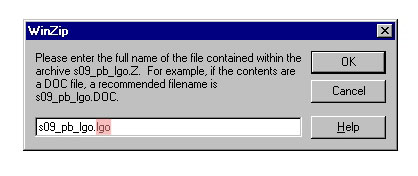
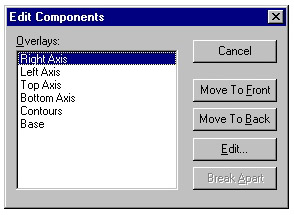
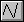
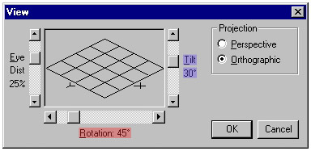
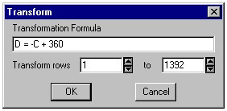

The .lgo format stands for line graph optional and is a derivation of the older USGS digital line graph (.dlg) format. ".DLG files are digital vector representations of cartographic information. Data files of topographic and planimetric map features are derived from either aerial photographs or from cartographic source materials using manual and automated digitizing methods." (http://edcwww.cr.usgs.gov/glis/hyper/guide/usgs_dlg) For more information, take a look at the USGS .dlg format page . The standard .dlg format is no longer obtainable from the USGS, but the optional format will continue to be in service while the newer Spatial Data Transfer Standard (SDTS) format becomes more available.
Begin by downloading a sectional base map from Xerox
which will be edited for the study area, Collin County. Be sure to read
the directory information file cleverly labeled as readme.fil .
This file will provide which section of the US you will need and more importantly,
will explain the file naming convention. You will need the Southern
Plains States section and the Political Boundary file. The files
have been compressed in Unix using the Lempel-Ziv-Welch (LZW) encoding
method and will have the extension (.Z) (ftp://spectrum.xerox.com/pub/map/README-MAP).
Save the file to your network account.

Open Mapviewer from the Golden Software directory and import the .lgo file (File | Import...). The Import window will open; check that the Boundary gsb; bna; lgo option is highlighted, and click OK. In the Import Files window, select the .lgo file and click OK again. The DLG Import Options window will appear; be sure the projection is set to Lat/Long and All Nodes, All Areas, All Lines are checked on. Once opened, there should be a political boundary file of North Texas, including the Panhandle, and all of Oklahoma. Now the boundary file must be edited; you want just the Collin County boundary lines so everything else must be deleted. Large scale deletions can be accomplished by a marquee selection using the fence tool . A polygon, or a county in this case, will not be selected by the fence unless it is completely enclosed. Individual selections can be done with the pointer . Do not forget to delete the outside boundary around the entire section. Once the other polygons are gone (except Collin County), it may be necessary to zoom in and clean up individual line segments left behind. You may notice that some of the Collin County lines appear to be bold. These are duplicate lines on top of one another, left behind by the deletion of the adjacent counties. One of the two lines can be selected and deleted to return the county line to the original weight. The final base map boundary file should look something like this...boring but useful.
Export the file as a .GSB format. This file will be your base map. Keep it safe.
The next step is taking the actual well data and creating a spreadsheet. This spreadsheet(s) will become the brains of your map(s). As mentioned before, the time periods that will be examined will be 1977 and 1997. A sample spreadsheet for 1977 will be provided, but the 1997 sheet, you will need to construct. Like most real world data sets, this data is not in an ideal condition. For example, for the 1977 set of data there are 3 generalized "zones" of collection dates: the middle of February (10, 14), early March (8-9), and the middle of November (14, 18). Due to this range in sampling dates, there may be some variations in water elevations (over the ranges of time) at any given well location. This introduces temporal error into the elevation readings, but these are accepted sources of error due to the nature of the data collection process. Sometimes these errors are unavoidable. A certain amount of judgement will be required to sort through extraneous versus useful data. This dataset has already been analyzed, and the unnecessary wells will be excluded from the well ID list that will be provided. It is important to be aware though, of the need for data editing.
You will notice the structure of collin_77d.dat consists of six columns: "Longitude","Latitude", "Elevation of Water Level", "Well ID", "Date of Sample", "Rock Unit", and "Attributes". The first four columns are critical. "Longitude" and "Latitude" obviously establish a location, "Elevation..." sets the Z variable or third dimension, and the fourth is "Well ID" which is not necessary in the mapping stage but will be needed to keep track of the data. The "Date of Sample" is important in determining which wells have the lowest sampling date range. This reduces the error from variations of well elevation over time. The last two columns are more supplemental than necessity. "Rock Unit" refers to which geologic unit the aquifer exists in, which in a single aquifer study is not that important, but would be in the event of a multiple aquifer study. Lastly, is the "Attribute" column which holds the P's and Q's mentioned before; this may help crop out unwanted data later, in one's study. This has already been completed for the 1977 spreadsheet so the attribute column is empty. You will need to emulate this database structure when creating the spreadsheet for 1997.
To begin creating the 1997 spreadsheet, open Surfer32 under the Golden Software directory. Open File | Worksheet or click on the Worksheet icon and in columns A through G duplicate the 1977 spreadsheet headings (Column F "Rock Unit" optional). The following wells are to be included into the 1997 spreadsheet; enter them into column D.
| 18-36-803
18-43-204 18-44-601* 18-44-702 18-44-803 |
18-45-604
18-50-202 18-50-301 18-51-902 |
Columns "Elevation of Water Level", "Date of Sample", and "Attributes" will be filled with data from the Water Level Publication Report, and the "Latitude" and "Longitude" columns will come from weldta text file. At this point, the spreadsheet should look something like this.
The next step is to input the latitude and longitude. The lat./long.data in the weldta.txt file is in degrees- minutes-seconds; these will need to be converted to decimal degrees. A second spreadsheet is needed for this purpose with an ID column and four columns for both latitude and longitude: "Well ID" in column A, "Degrees" in column B, "Minutes" in column C, "Seconds" in column D, and "Conversion" (the formula is used for the title in the graphic example) in column E. The degree, minute, second, and conversion column sequence will need to be repeated for the latitude calculation. A graphic example of the conversion spreadsheet for 1977. The formula for the conversion:
or
E = ((((D / 60) + C) / 60) + B) * -1
To calculate column E, in the Surfer spreadsheet choose Compute | Transform... , and enter the bottom version of the formula. This should convert columns B, C, and D (providing the same spreadsheet structure was used). The two conversion columns (longitude and latitude) can now be added to Columns A and B respectively, to the 1997 spreadsheet.
Its necessary to convert the longitude in the Western hemisphere to a negative number . The latitude/longitude cartographic scheme divides the earth into four quadrants similar to the cartesian coordinate system in basic geometry. In order to avoid east versus west longitude mapping problems, the cartesian coordinate system scheme was superimposed onto the latitude/longitude system thereby assigning positive and negative values versus the east - west nomenclature. The same is true for north - south latitude. A graphic example. Do not multiply by negative one when converting latitude.
The last step is adding the values and text to the "Elevation of Water Level" and "Date of Sample" columns; "Rock Unit" is optional since this is a study of only one aquifer. These values can be obtained from the Water Level Publication Report. A graphic example of data extraction from the report. Once these values have been input, the spreadsheet should be complete. It should emulate the 1977 spreadsheet but with only nine wells.
Save the spreadsheet file in the .dat format to your directory.
First, load the base map that you edited in Mapviewer. From the Map menu choose Load Base Map... The Import File window will appear; select your .gsb file from your network directory. If the U:\\Dewey drive does not appear in the Drives: box click on Network... and then cancel from the Map Network Drive window. The U:\ drive should now appear in the Drives: box. Open the .gsb file. A boundary file of Collin County with latitude and longitude should appear. Note the longitude is in negative decimal degrees.
Next, you must create grid files from your spreadsheets. Grids (.GRD) are the format Surfer actually maps not the raw data file itself, so grid files are, in a sense, a transformation of empirical data to a graphical format. From the Grid menu choose Data... and select your 1977 .dat file that you downloaded. In the Scattered Data Interpolation window check that X: is Longitude, Y: is Latitude, and Z: is the Elevation of Water Level. Set the Gridding Method to Kriging. The gridding method controls the interpolation procedure of the data file, or in other words, how it represents the data. Different methods can produce distinctly different maps. The following examples were created from the same 1977 grid. Lastly, change the Output Grid File directory to your network directory.

Now the .grd files can be opened, contoured, and combined with the base map. Open the Map menu and choose Contour and the Open Grid window will appear. Select the 1977 .grd file and click OK. The Contour Map window should appear. There are a number of options that can be experimented with later (i.e. contour line labels), but for now, make sure the Fill Contours box is clicked off and just click on OK. Select both the contour and base maps by selecting one and then holding the shift key down while selecting the other or by choosing Select All from the Edit menu (if there is more than one map present on the page, the latter option will not work). Once they are both selected, open the Map menu and choose Overlay Maps. Now the files are referenced to the same x-y coordinate system and provide a look at real space. To edit maps that have been overlain, select the map and open Map | Edit Overlays... In the Edit Components window, you can choose the axes of the maps and each individual map in the overlay. Then click on Edit. A graphic example of the 1977 set of data... with filled contours.You will notice the contour map does not cover the entire county. Surfer can only extrapolate a given distance within the well distribution grid. In other words, the distribution of the wells is too small for Surfer to extrapolate across the entire county. All of the contouring outside of the distribution grid or box would be merely conjecture. Unfortunately, little to no data exists in the southeastern area of the county due to the Fresh to Slightly Saline Line. This data gap will become a little more evident after the completion of the next step.
Wells and elevation labels can be added by opening the Map | Post... The X Coord should be Longitude, Y Coord be Latitude, and Label be Elevation of Water Level. Other attributes can be changed, but for now use the defaults. Once again, select the two maps (1. the base map plus contour and 2. the label post map) and overlay them. A graphic example.
Now repeat the same procedure with the 1997 spreadsheet you created.
The two grid files used to produce the 1977 and 1997 contour maps have the same X coordinates or longitude, but they differ in latitude. This results from how Surfer creates the well distribution grid which in turn depends upon the sampled well locations (discussed in contour section). Both map grids will have to be trimmed of the edges that do not overlap with the other grid for the volumetric calculation. A graphic example. You will need to know the grid dimensions. These can be obtained from the Grid Info... buttons in the Grid Volume window. From the Grid pull-down menu, open Volume... Open your 1977 grid file and the Grid Volume window should appear with the 1977 grid in the Upper Surface section. Click on Grid File in the Lower Surface section and browse to the 1997 grid file. Open both Grid Info... windows and compare the sets of values. An example. Notice the Y values differ. The grids will need to be trimmed so that they share common values of latitude. Record the Y-Minimum and Y-Maximums for each grid, and close the grid volume window.
Now you need to choose the common boundaries from the two the grid dimensions. An example from the previous Grid Info... graphic. Choose the highest latitude of the two grid lower boundaries and the lowest latitude of the two upper boundaries, or in other words, the 1997 lower boundary and the 1977 upper boundary. The common boundaries will cut down the area of the two contour plots, but it is necessary to eliminate any loose edges. It is important to note that the volume calculation does not represent the entire area of the the two contour maps, which in turn, do not represent the entire area of the county. Due to the data available or the lack of wells in the Woodbine aquifer in the southern and the eastern regions of the county, it is the best that can be done. Using the Grid | Data... option open the 1977 .dat file created from the spreadsheet. You have already done this when creating the first grid file used in the contour mapping section of the exercise. In the Grid Line Geometry section, the grid dimensions can be adjusted. From the previous example diagram, when clipping the 1977 grid, you will want to use the 1977 upper latitude for the upper boundary and the 1997 lower latitude for the lower boundary. The Gridding Method should be Kriging, and don't forget to change the output name and directory to your own. An example. Trim the 1997 grid the same way; it will require the inverse input into the Grid Line Geometry section.
Both grids have now been trimmed and are ready to be used with the volume function. Open Grid | Volume... and choose your trimmed 1977 grid file. Once again, in the Lower Surface section click on Grid File and browse to your trimmed 1997 .grd file. You may want to check both Grid Info...' windows again. The X and Y minimum and maximums should be identical. If so, click on OK and a text file report (.txt) should be created in the Surfer Editor window. To save this go to File | Save As... on the regular Surfer menu-bar. An example of the volume report with the volume figures altered considerably, of course.
Relative Error = (Largest Volume - Smallest Volume) * 100 / Average of all three Volumes
in the Volume report example:
The Volume would be reported as 3.53917
(average) ± 0.009% , but 3.53917 what?
You will need to calculate your average volume from the volume calculation report produced from your files using this method.
Volume Conversion from Cubic Degrees to a Consistent Unit (cubic feet)
The last step is to determine what these volume values represent. As you may be wondering, the numbers are unitless in the report. The reported figures depend on what units you use in each of your grids that you input into the volume function. In this case, the three dimensions are degrees longitude (X value) by degrees latitude (Y value) by feet in elevation of water level (Z value). This produces rather useless volume values unless they are converted to a common unit, feet cubed for example. This is a little easier said than done because the number of feet per degree longitude as well as latitude varies across the earth. For an overview, peruse the NCGIA Core Curriculum in GIScience Latitude and Longitude module, especially 3.1.1 and 3.2.1. For simplicity, the longitudinal distance was calculated along the bottom latitude of the contour map.The distance (feet) represented by the study area boundaries (latitude and longitude) has already been calculated and is illustrated on the distance calculation page. The distance represented by the study area longitude equals 131,239 feet and 77,136 feet for latitude.
Example Calculation:
Since Volume = X axis * Y axis * Z axis = 3.53917 ± 0.009% degrees longitude · degrees latitude · feet
Volume = (3.53917 ° longitude · ° latitude · feet) * (131239 feet · ° longitude-1 ) * ( 77136 feet · ° latitude-1 ) =
= 35,827,908,025 ft3This is the average volume with a consistent unit = 35,827,908,025 ft3 ± 0.009%
You will need to covert your average volume to cubic feet using this method.
A more common English system volume unit used in hydrogeology is acre·ft which is defined as the volume of water necessary to cover one acre, one foot deep. The final volume will need to be converted to acre·ft.Example Calculation:
Volume = 35,827,908,025 ft3 * acre · 43560 ft-2 = 822,496 acre·ft This is the total volume with a correct unit of measure = 822,496 ± 0.009% acre·ft
You will need to covert your average volume to acre-feet using this method.
You now have a volume estimation in one unit of measure, but referring back to the diagram , is the current volume figure accurately representative of the volume of water calculated from the difference between the 1977 and 1997 equipotential surfaces? The volume calculated between the two surfaces is a total volume of both rock and water (assuming: all voids are saturated). To obtain the volume of water, the volume of the rock must be subtracted from the total volume, or since water can only be contained in the pore spaces of the Woodbine rock unit, the total volume can be multiplied by the porosity to obtain the pore space volume, which if saturated, is also the total volume of water between the 1977 and 1997 surfaces. A typical porosity for the Woodbine sandstone is 5 percent.Example Calculation: Net Volume of Water = acre·ft * porosity
= 822,496 acre·ft * 0.05 Net Volume of Water = 41,125 acre·ft
This is the final net volume of water removed from the aquifer between 1977 and 1997 = 41,125 ± 0.009% acre·ft
You will need to calculate your final net volume of water using this procedure.

can be used to recreate the contour lines.
3-D labels can be added to the surface plot by opening Map | Post and selecting the 1977 data file. In the Post Map window, change the Label column to be Column C (the elevation of the water level) or Column D if well ID's are more useful. In the 3-D Label Lines field enter the length of the pointer line (try 0.50 inches), and change the line color to red in the Attributes window. In the Symbol Attributes box, select an empty field so the Default Symbol box is empty. Click OK. Select both the post map and the surface plot and overlay them. An example.
Other map options are available under the Map menu. You may want to experiment with them just to become acquainted with the different styles.
Terrain Aspect provides the steepest slope at each grid node or in other words, the angle exactly perpendicular to the contour line. This would simulate the path that water would flow if running off the land-surface, in a watershed for example. Using this option, you can predict the direction of flow from a groundwater equipotential map as if it were runoff on the surface of the earth. An example .
Choose Grid | Calculus... and open either grid; the Grid Calculus window should appear. In the Grid-to-Grid Operation section choose Terrain Modeling and click on options and select Terrain Aspect and click OK. In the Output Grid File box browse to your directory, and in the Save Grid window choose Save File as Type and select ASCII XYZ (*.DAT). This will save the calculus output file as a data (.dat) file. Click OK. Click OK once more and the calculus fuction should output the file.

Now, you must manipulate the database file. Open the file in the Surfer worksheet and in Options | Sort... choose the Primary Sort Column as C and Ascending. This will group all the rows with a blanking value together; highlight and delete these rows. "Blanking values indicate that insufficient data existed to generate a grid node value at that particular location..." (Surfer manual, p.5-24) Open the Transform... function from the Compute menu and enter the formula:D = -C + 360
Check to be sure the rows to be transformed are 1 to the end of your data-set (after blanking value deletion) and then click OK. Save your data file (.dat) and close the worksheet window.
Back in Surfer, open your basemap, create another contour map, and overlay them. From the Map | Post... open the data file you just edited and the Post Map window should appear. In the Worksheet Columns | Anglebox select Column D: , in Symbol Size | Fixed Size enter the size; try something around 0.12 inches. Lastly, in the Default Symbol section choose your symbol to represent flow direction and click OK. Select all the maps and overlay them again. Remember, you can edit any map in the overlay by selecting them and choosing Edit Overlays... from the Map menu.
You may want to experiment with some of the options available
in the Post Map window; for example, try changing the Symbol Size
to Proportional or Post every: to 2. Although changing the latter
doesn't work very well it at least demonstrates that other options are
available to explore. That should finish the flow direction post map. An
example.
Created March 28, 1998. LNC.
Last Updated 1.8.2000. LNC.